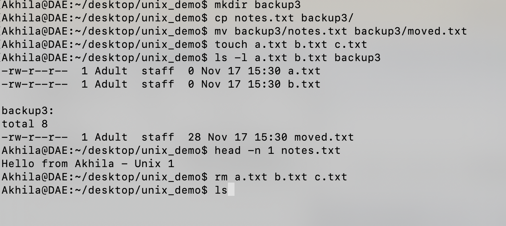
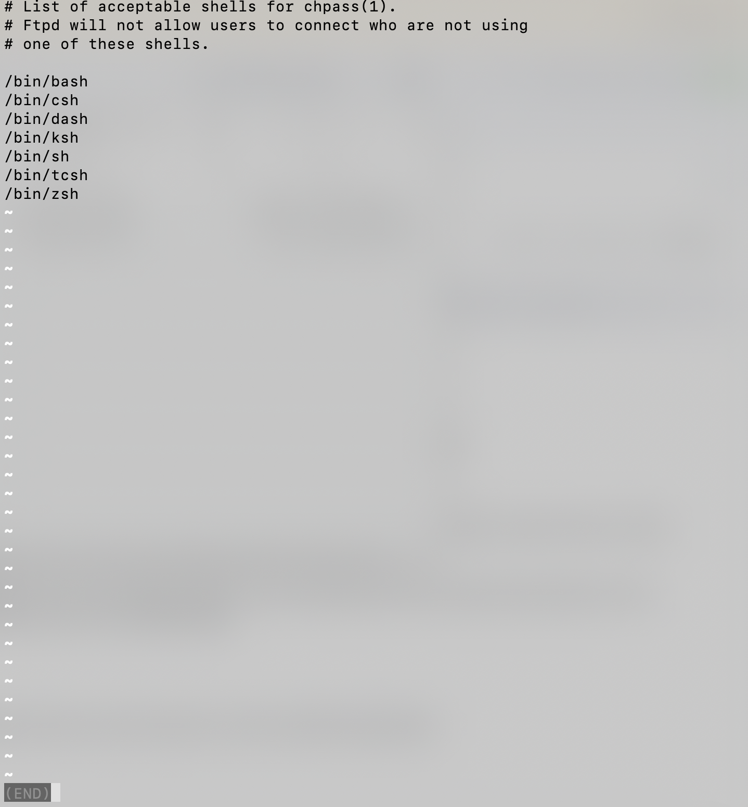
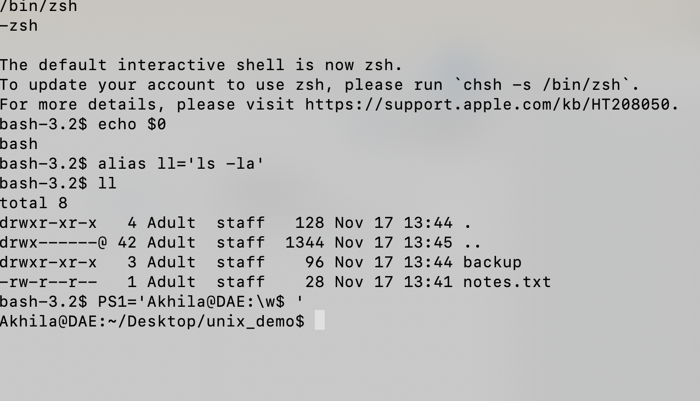

| Criterion | Evidence | Screenshot |
|---|---|---|
| Commands: cp, mkdir, less, mv, rm | mkdir backup3, cp notes.txt backup3/, mv backup3/notes.txt backup3/moved.txt, rm a.txt b.txt c.txt, less /etc/shells | 1, 2 |
| Arguments: multiple arguments, and an argument to an option | touch a.txt b.txt c.txt and ls -l a.txt b.txt backup3 (multiple arguments); head -n 1 notes.txt (argument 1 given to option -n) | 1 |
| Kernels and shells: default shell, current shell, switch shell | echo $SHELL → /bin/zsh (default); echo $0 → -zsh (current); bash switches shell, then echo $0 → bash | 3 |
| Environment: create an alias and customize the prompt | alias ll='ls -la' then ll; PS1='Akhila@DAE:\w$ ' changes the prompt to Akhila@DAE:~/Desktop/unix_demo$ | 3 |

mkdir makes the folder backup3, cp copies notes.txt into it, mv renames the copy to moved.txt, touch and ls -l take several arguments, head -n 1 passes the argument 1 to the option -n, and rm deletes the three files.
less /etc/shells opens the list of available shells one screen at a time; (END) at the bottom shows the pager is open (press q to quit).
/bin/zsh, current shell -zsh, switch to bash (confirmed by echo $0), alias ll working, and the custom prompt Akhila@DAE:~/Desktop/unix_demo$.